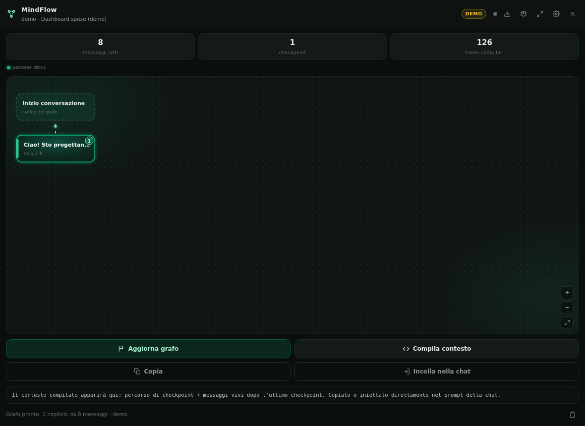

La memoria delle tue chat AI, sul tuo computer.
MindFlow divide le conversazioni lunghe (e le pagine di testo) in capitoli semantici, comprime ogni capitolo in un checkpoint e ti dà il contesto compilato in un click: nuova chat, memoria intatta, nessun dato che esca dal browser.
Anteprima stilizzata dell'interfaccia — il grafo reale cresce accanto alla chat, senza mai lasciare la pagina.
Screenshot reale
Il grafo, costruito su una chat lunga

Installazione beta
Primo lancio qui su GitHub: pronta in due minuti
Finché non arriva lo store si installa dal codice aperto: serve Chrome per desktop e un motore LLM che già possiedi (locale come Ollama, oppure un'API cloud con la tua chiave).
Scarica lo zip
Dalla sezione Releases scarica l'ultima versione (es. mindflow-extension-v1.2.2.zip) ed estraila in una cartella stabile.
Carica l'estensione
Apri chrome://extensions, attiva «Modalità sviluppatore», poi «Carica estensione non pacchettizzata» e seleziona la cartella estratta.
Collega il motore
Nelle opzioni indica l'endpoint del modello (il test di connessione corregge da solo le porte sbagliate) oppure l'API cloud con la tua chiave.
Chrome mostra a ogni avvio un avviso sulla «modalità sviluppatore»: è il comportamento normale fuori dallo store e non limita nulla. Aggiornamenti: scarica la nuova Release, estrai sulla stessa cartella e premi «Ricarica» nella pagina estensioni. Guida completa: INSTALLAZIONE.md.
Come funziona
Tre passi, nessuna configurazione complicata
L'estensione osserva la conversazione nella pagina stessa e lavora accanto a ChatGPT, Claude, Gemini e a qualsiasi pagina di testo.
Apri il pannello nella chat
Una pillola discreta compare accanto alla pagina: il pannello legge la conversazione in corso mentre proseguono i turni, senza toccare nulla.
Costruisci il grafo
Il motore locale divide la chat in capitoli semantici e comprime ogni capitolo in un checkpoint con titolo, riassunto e decisioni chiave.
Compila e riporta la memoria
Il contesto compilato sostituisce l'intera chat: un click su «Copia» e incolli la memoria in una conversazione nuova, pulita e leggera.
Funzioni
Pensato per il tuo modello, non per un cloud
Collega il motore che già usi: il client riconosce l'endpoint e si corregge da solo quando la porta cambia.
Grafo di memoria a capitoli
Ogni capitolo della conversazione diventa un nodo con riassunto e decisioni: si vede cosa ha cambiato la chat, in ordine.
Checkpoint compilati
Il contesto compresso entra nelle nuove conversazioni con un click — la chat resta corta, la memoria resta completa.
Motori locali e cloud
Ollama, LM Studio, llama.cpp, vLLM, Jan, KoboldCpp, GPT4All… oppure OpenAI e Anthropic con la tua chiave.
Auto-correzione endpoint
Porte cambiate (1234→1235) e URL con /v1 di troppo vengono riconosciuti e corretti automaticamente dal test di connessione.
Modalità pagina
Non solo chat: wiki, articoli e documentazione online possono essere divisi in capitoli e riassunti allo stesso modo.
Sessioni senza residui
Il cambio di scheda, di modello o il reset creano sessioni isolate: la suite di test automatici verifica che non resti memoria sporca.
Privacy
Niente server. Niente telemetria. Punto.
Il codice è pubblico e verificabile, con un audit di sicurezza statico completo e un'informativa privacy pensata per l'utente, non per gli avvocati.
Documentazione
Guida di installazione passo-passo — caricamento unpacked, collegamento del motore, sblocco CORS di Ollama e LM Studio.
Test automatici
La suite gira senza dipendenze: node scripts/test-engine-client.js e gli altri test-*.js. Ogni versione è allineata nel CHECKPOINT.
Segnalazioni di sicurezza
Trovato un problema? Usa la scheda Security → Report a vulnerability del repository: niente dettagli nelle issue pubbliche.